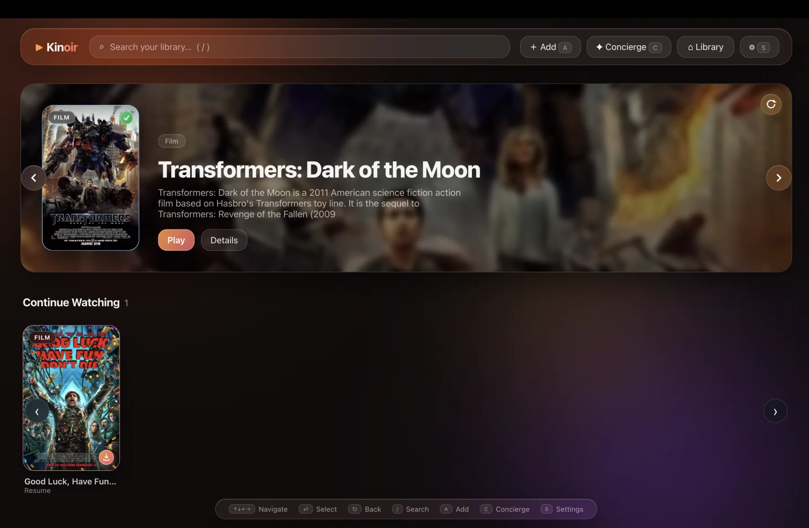
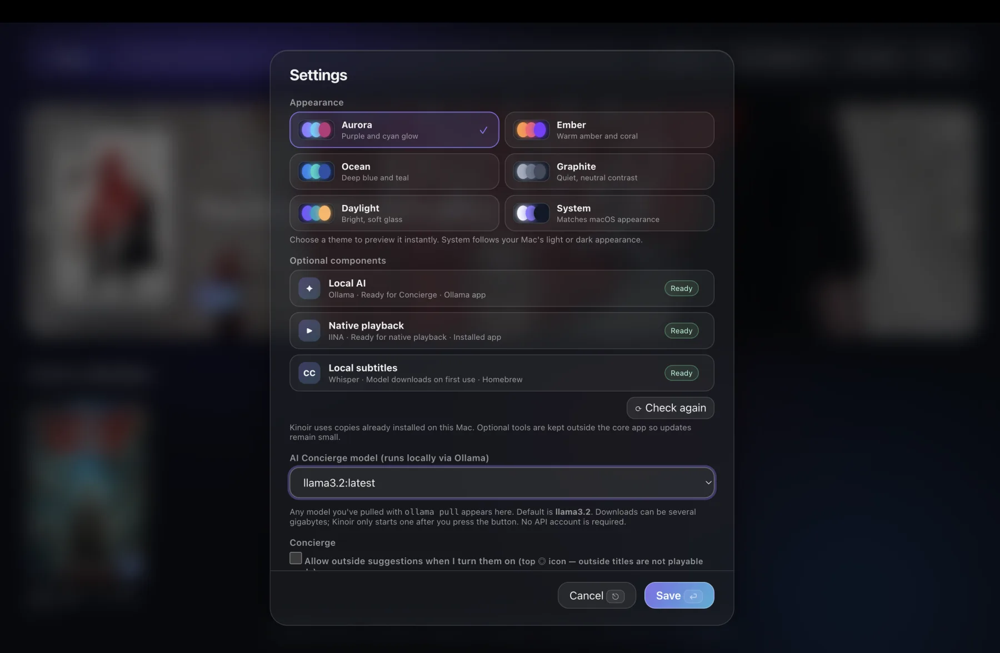

Recommended
Apple Silicon
For Macs with an M1, M2, M3, M4, or newer Apple chip.
A media library for macOS
Kinoir indexes movies and shows stored locally or in cloud storage, automatically fills in details and covers, generates previews, and features an onboard local AI to chat for recommendations.
macOS 12 or newer Local-first MIT licensed

Download
Recommended
For Macs with an M1, M2, M3, M4, or newer Apple chip.
Legacy Macs
For Mac computers with an Intel processor.
?Not sure? Open Apple menu → About This Mac and check the Chip or Processor field.
What it does
Movies and episodic shows share one library, wherever the source happens to live.
Use a title, subject, tone, genre, or a half-remembered detail. Search works offline.
Concierge uses an installed Ollama model and can be limited to titles you actually have.
A generated preview remains in Kinoir even when its source drive is disconnected.
Kinoir Air gives a paired device read-only access over your local network.
Appearance

Local-first
There is no Kinoir account. Browsing history, semantic search, playback state, and your library database stay on your Mac.
Cloud playback and optional metadata or Brave Search features connect only when you choose to use them.
No Kinoir accountOpen the app and add your library.
Paths stay privatePaired devices never receive local file paths.
Optional local toolsRun AI and subtitles on your own hardware.
Troubleshooting
Because Kinoir is a free, open-source project without a paid Apple Developer subscription, macOS Gatekeeper places internet downloads into quarantine by default. The app is not actually damaged.
Quick fix: Right-click Kinoir.app in Finder, select Open, and click Open again. (You only have to do this once.)
Terminal fix (Recommended): If macOS hides the "Open anyway" button entirely, you can easily fix this via Terminal:
xattr -cr /Applications/Kinoir.app
Kinoir uses Ollama to run models locally. Once Ollama is installed on your Mac, Kinoir will automatically detect the background service. You can choose which model to pull directly in Kinoir's Settings.
Yes! While Kinoir has a built-in fallback player, for the best format compatibility (including MKV and advanced subtitles), it integrates natively with IINA. Just install IINA on your Mac and Kinoir will use it automatically.
Open source
Kinoir is an Electron app released under the MIT license. Issues and pull requests are public.
Kinoir for macOS
Release information unavailableThe GitHub releases page will open instead.
Thank you for downloading!If macOS says the app is "damaged" on first launch, read our quick fix here.